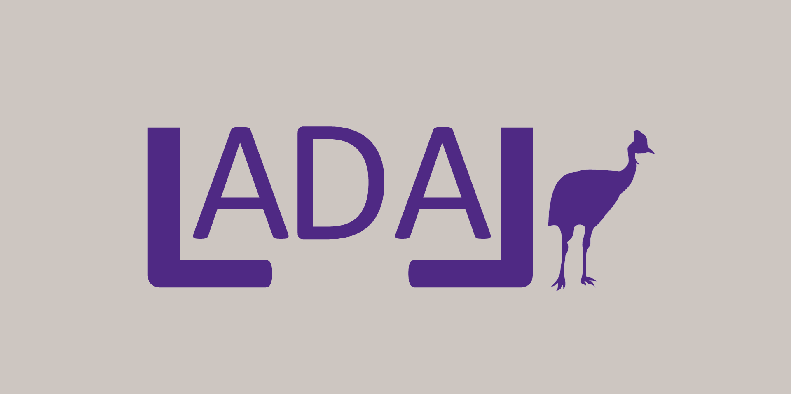
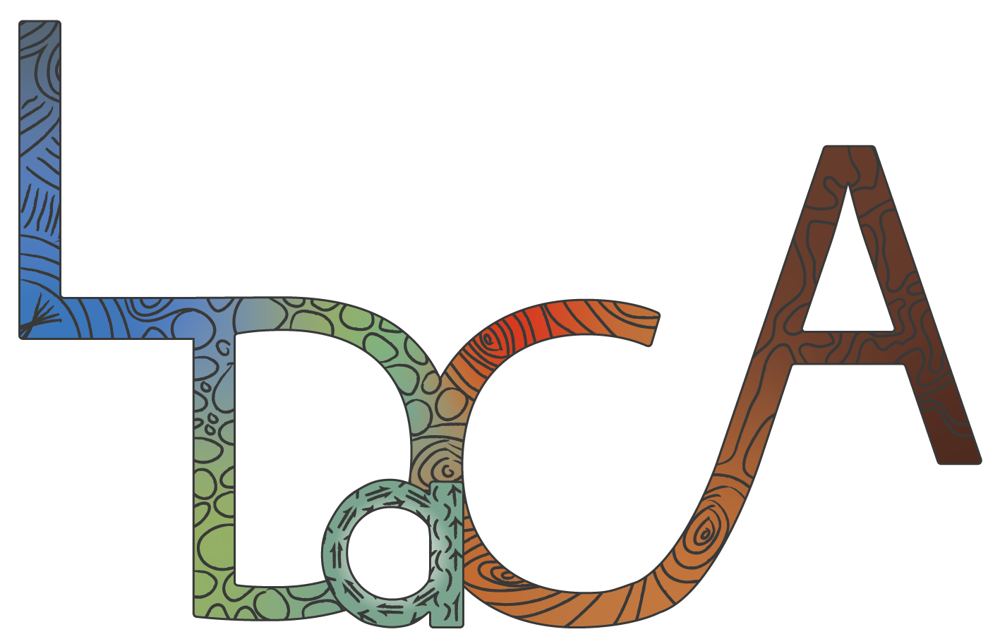
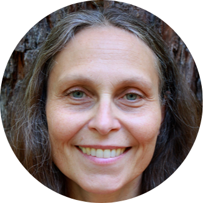
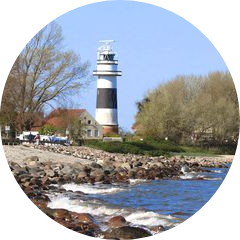
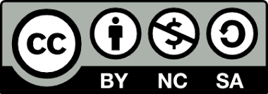
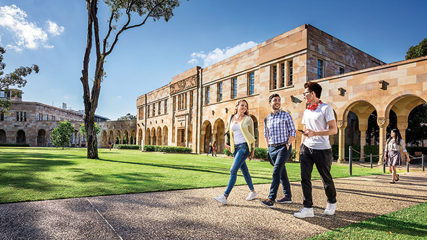

Language Technology and Data Analysis Laboratory (LADAL)

WELCOME

Welcomes to the website of the Language Technology and Data Analysis Laboratory (LADAL). LADAL (pronounced lah’dahl) is a free, open-source, collaborative support infrastructure for digital and computational humanities established 2019 by the School of Languages and Cultures at the University of Queensland. LADAL aims at assisting anyone interested in working with language data in matters relating to data processing, visualization, and analysis and offers guidance on matters relating to language technology and digital research tools. To this end, LADAL offers introductions to topics and concepts related to digital and computational humanities, online tutorials, interactive Jupyter notebooks, and events including workshops and webinar series.

LADAL is part of the Language Data Commons of Australia (LDaCAATAP) and the Australian Text Analytics Platform (ATAP). The aim of LDaCA and ATAP is to provide researchers with a Notebook environment – in other words a tool set - that is more powerful and customisable than standard packages, while being accessible to a large number of researchers who do not have strong coding skills.
The Language Data Commons of Australia (LDaCAATAP) and the Australian Text Analytics Platform (ATAP) projects received investment (https://doi.org/10.47486/PL074) from the Australian Research Data Commons (ARDC). The ARDC is funded by the National Collaborative Research Infrastructure Strategy (NCRIS).

The Australian Text Analytics Platform (ATAP) projects received investment (https://doi.org/10.47486/PL074) from the Australian Research Data Commons (ARDC). The ARDC is funded by the National Collaborative Research Infrastructure Strategy (NCRIS).
Since going public January 1, 2021, LADAL has received almost 1,100,000 page views of more than 500,000 active users in nearly 750,000 engaged sessions! The majority of LADAL users access the LADAL website from the USA (app. 20%), Great Britain and Germany (app. 6%), Australia and China (app. 5%), India (4%), and the Netherlands (3%). The highest number of users per day was May 18, 2022 with 981 users.

Get in Touch!
To get in touch with us here at LADAL, maybe because you are interested in becoming a contributor or because you found an error on our site, you can simply write an email to ladal@uq.edu.au, reach out to us on Twitter (@slcladal), send us a message on Facebook (see our Facebook page or you can sign up to the LADAL email list. To subscribe to our email list, simply write an email to ladal@uq.edu.au with the subject email list.
Goals
The LADAL aims to help develop computational and digital skills by providing information and practical, hands-on tutorials on data and text analytics as well as on statistical methods relevant for language research. In addition, the LADAL provides self-guided study materials relevant for computational Natural Language Processing. In order to be attractive to both beginners and people with advanced skills, the LADAL website covers topics and introduces methods relevant for people coming with different degrees of prior knowledge and experience - ranging from introductions to concepts of quantitative reasoning to step-by-step guides on advanced statistical modeling.
Since the primary concern of the LADAL is to introduce computational methods that are relevant to research involving natural language, the focus of this website is placed on linguistic data and methods relevant for text analytics. As such, the LADAL provides resources for (computational) text analytics and offers introductions to quantitative reasoning, research designs, and computational methods including data visualization and statistics. The areas covered on the LADAL website are
introductions to quantitative reasoning and basic concepts in empirical language studies.
introductions to R as programming environment for processing natural language data.
tutorials on data visualization and data analytics (statistics and machine learning).
tutorials on text analysis, text mining, distant reading, and corpus linguistics.
The resources and events offered by LADAL also aim at promoting and informing about Best Practices in data handling such as transparency, reproducibility and the FAIR principles (data should be findable, accessible, interoperable, and reusable).
User Stories
Below are selected user stories of people that have used LADAL resources in their research, training, or teaching.
USER STORIES
We are currently looking for user stories (also known as testimonials) to see and show what people use LADAL resources for. If you have used LADAL resources - be it by simply copying some code, attending a workshop, learning about a method using a tutorial, or in any other way - we would be extremely grateful, if you would send us your user story!
To submit your user story, simply write up a paragraph describing how you have used LADAL resources and what you have used them for and send it to ladal@uq.edu.au. We really appreciate any feedback from you about this!

Paula Rautionaho (University researcher, University of Eastern Finland)
I learned about the LADAL website at a conference and since then I’ve been going through the contents bit by bit, starting with R and Data science basics and the many tutorials available. The website is great for acquiring basic knowledge, and I’ve also used it to find information on specific methods that I need for my research. The way the code is explained in detail and exemplified through actual studies, and the fact that the code is downloadable from the site, are extremely useful and helpful. What I usually do is download the string of code, go through each line to understand what’s going on and then modify it to my needs. The website also helps in understanding the output of statistical analyses, which for me is what sets this resource apart from many others.

Laura Janda (Professor of Russian, The Arctic University of Norway, Tromsø)
LADAL is a tremendously valuable resource that I recommend to all my students in my Quantitative Methods in Linguistics course. Given the broad portfolio of various courses that I teach plus my numerous other commitments, combined with the rapid pace of developments in both R itself and its application to linguistic analyses, it is not possible for me to keep apace with all of the developments all of the time. It is very important to have an authoritative and comprehensive resource that represents current best practices in the field, and that is exactly what LADAL is.

Robert Daugs (Postdoctoral Researcher, University of Kiel)
It’s great to see how the content has evolved and it seems that whenever I come across a method I hear about in another talk or read in a paper and wish to implement in my own research (or just try it out), a corresponding script with meaty instructions is already available at LADAL. The tutorial I probably came back to more than once actually covers mixed-effects regression modeling. Given this method’s value in corpus-based, variationist linguistics and elsewhere, I think it’s great that this tutorial made the cut and I’m looking forward to any further updates the LADAL crowd might have planned for this.
Thanks for such a wonderful, open access resource!
Touba Warsi (Analyst - School of Medicine, University of California San Diego)
I was very happy to find the text analysis tutorial (https://slcladal.github.io/textanalysis.html) for text analysis in R. Up-to-date and super helpful! I use it for mining open-ended student survey comments with the hope of identifying themes, glean feedback without resorting to human coding of the comments.
Please keep up the great work!
Audience
The LADAL resources are aimed at researchers in HASS (Humanities, Arts, and the Social Sciences) and we aspire to attract complete novices as well as expert users. And, while the focus of the LADAL website is placed on handling data that represents natural language, anyone who has an interest in quantitative methods, data visualization, statistics, or R is welcome to explore this webpage.

At LADAL, we aim to reach out and make our resources available to the research community and anyone interested Language Technology, Data Analysis, and using computational means to extract, process, visualize and analyze language data. To this end, we offer workshops, give presentations and talks, organize webinars (see, e.g., the LADAL Webinar Series 2021).

In addition, we provide resources on the LADAL website and on the LADAL YouTube channel, we announce updates on Twitter (@slcladal) as well as on our NEWS site and via our Facebook page. To get in touch, you can contact us on Twitter or send us an email via ladal@uq.edu.au.
Programming

The LADAL primarily uses the programming language R because R is extremely flexible, relatively easy to learn, free and open source, and R has a substantive and very friendly user community. R is not merely a software package but a fully-fledged programming environment which allows complex Natural Language Processing, statistics and data visualizations and it can also be used to create websites or apps, and has direct pipelines for version control (Git). This website as well as the self-guided study materials offered by the LADAL use are written in R-markdown - a way to combine R-code with text. The flexibility of R makes it a sensible choice for researchers that strive for high quality and extreme flexibility while following best practices that enable complete replicability and full transparency. If you want to learn more about R and why we use it, please check out our Why R? page.

As computation is becoming ever more prevalent across disciplines as well as in both the social and economic domains, the LADAL offers a resource space for R that make it accessible to lay users as well as expert programmers. That said, we will expand the resources provided by the LADAL to other tools and environments and include tutorials based on Python in the future.

Licensing
The LADAL website was created by Martin Schweinberger. It was freely released under GNU General Public License, Version 3, June 2007.
Citation
If you use (parts of) LADAL tutorials for your own research or in your teaching materials, please cite the individual subpages as shown at the bottom of each page or reference it as:
Schweinberger, Martin. `2023. The Language Technology and Data Analysis Laboratory (LADAL). Brisbane: The University of Queensland, School of Languages and Cultures. url: https://slcladal.github.io/index.html (Version 2023.09.14).
@manual{uqslc2023ladal,
author = {Schweinberger, Martin},
title = {The Language Technology and Data Analysis Laboratory (LADAL)},
note = {https://ladal.edu.au},
year = {2023},
organization = {The University of Queensland, School of Languages and Cultures},
address = {Brisbane},
edition = {2023.09.14}
}Disclaimer

The content of this website is free and comes with ABSOLUTELY NO WARRANTY. You are welcome to redistribute the content of LADAL resources given you adhere to the licensing. The content of this website is distributed under the terms of the GNU General Public License, Version 3, June 2007.
Share and Enjoy!